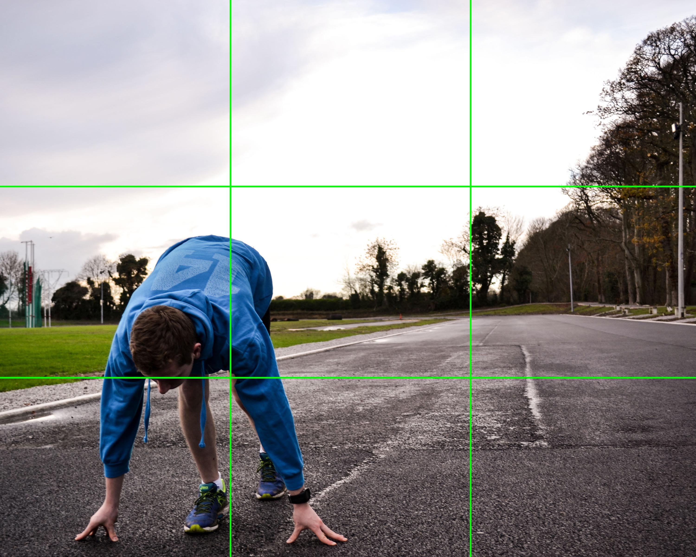
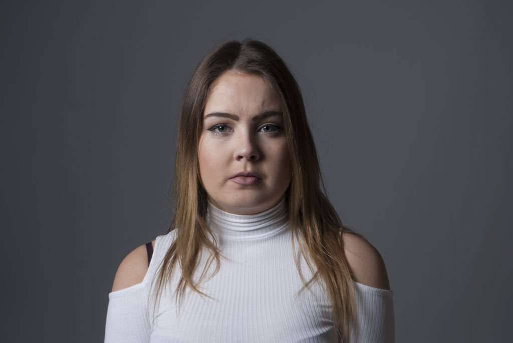
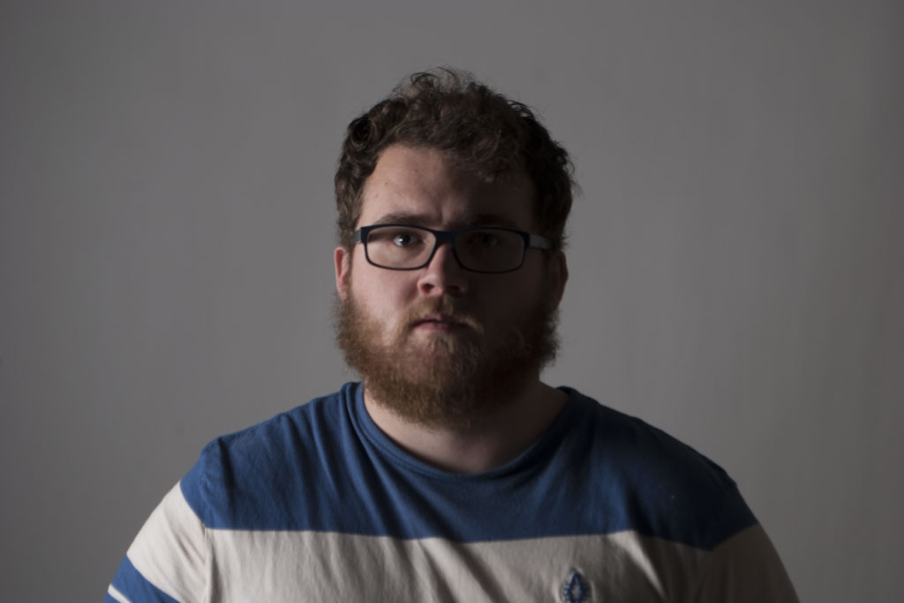

This is a photo essay that I did for a college assignment. For this photo essay i tried to capture the lifestyle of my friend who is an athlete. The goal was to convey the immense amount of work he puts into his training along with some other aspects to his life. I chose this topic for my essay because of my own passion for sport and staying healthy. (Hover over the grid to follow the story)


For this assignment i was asked to capture various classic portrait lighting styles including Short & Broad, Split, Rembrandt, Loop and Butterfly. I used the studio in my college and the equipment it had to capture each style of lighting. We were also tested on setting up the lights by only having 10 minutes to take all 5 shots.